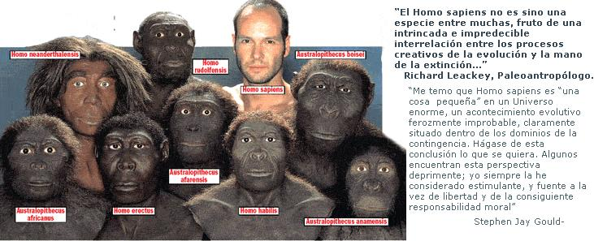

A diferencia de lo que ocurre en los países anglosajones, donde las Iglesias de corte protestante han adoptado firmes posturas entorno a la Teoría de la Evolución, en los países de mayor influencia católica el debate Creacionismo/Evolucionismo parece que no ha calado en la sociedad.
Desde mediados del pasado siglo (y bajo la influencia del teólogo y también paleontólogo Theilard de Chardin), la Iglesia Católica Apóstólica y Romana (ICAR) ha venido aceptando tácitamente las teorías evolucionistas, que en su momento había condenado abiertamente. Ya en 1950, Pío XII, en la encíclica “Humani generis”, manifestaba que no veía oposición entre el evolucionismo y doctrina católica, aunque mostraba reservas sobre la validez científica de la “hipótesis evolucionista”. Hubo que esperar hasta 23 de octubre de 1996 para que otro papa, Juan Pablo II, reconociera abiertamente que, a la vista de los avances en biología, la teoría de la evolución es “más que una hipótesis”.
Sin embargo, el medio escogido para hacer esta afirmación (un anuncio en la Academia de Ciencias Episcopales y no una encíclica o una carta pastoral) no es el más adecuado para despejar ambigüedades. Siempre que la ICAR entra en el terreno pantanoso de la confrontación de su doctrina con el conocimiento científico, la postura oficial es la ambigüedad. En lugar de tomar postura en el debate entre Creación o Evolución, la ICAR ha apostado por jugar en los dos bandos: “Creación & Evolución”.
Difícilmente un católico educado en Europa aceptaría una teoría creacionista basada en una Tierra de 6000 años de antigüedad. En una sociedad mayoritariamente laica (al menos en la práctica), ni la ICAR ni ninguna otra Iglesia encontraría apoyo social suficiente para extender esa suerte de “Geología alternativa” que las Iglesias protestantes (que cuentan con sus propias Universidades) han desarrollado en Estados Unidos con objeto de sustentar su particular visión del Creacionismo.
La ICAR es más sutil. Aparentemente se alinea la lado de la Ciencia, de manera que resulta difícil acusar a los pensadores católicos de ignorancia o de tergiversar los hechos. Los fósiles son fósiles, no engaños de Dios, y llevan ahí los millones de años que los científicos afirman. Sin embargo, esta aceptación del hecho científico hace de forma ambigua, haciendo un énfasis especial en todo aquello que aún no ha sido explicado - dejando abierta, por lo tanto, “la puerta del misterio”. Al fin y al cabo, la Evolución es una teoría, y el mecanismo de la selección natural a partir de mutaciones al azar aún no se ha explicado de forma satisfactoria, es imposible producir la forma de vida más sencilla en el laboratorio… De forma que apuntar la idea de un Dios que vela por la “corrección” del proceso no parece descabellado a los católicos cultos: ¿acaso ese mismo Dios no fue el que hizo estallar el Big Bang y estableció las leyes que mantienen a los planetas en la órbita exacta para hacer posible la vida?
Leyendo la Biblia de forma simbólica, la Fe (esa Fe ambigua, definida asimismo en términos de “misterio”) encaja perfectamente en los conocimientos científicos actuales. Los días del Génesis no son días físicos, sino períodos de duración indeterminada. La palabra de Dios (“Hágase …”) se convierte en un misterioso empujón del Creador para llevar su Obra por el camino premeditado. Se sustituye “lo aún inexplicado” de la teoría de la Evolución (es decir, el papel del azar y las mutaciones, o al menos el papel de “algún” azar y de “algunas” mutaciones) por otro mecanismo menos explicado aún, a saber, la existencia y la acción de Dios. Pero para el católico ese mecanismo no requiere explicación, pues es cuestión de Fe. Según la lógica católica, un misterio se soluciona con otro misterio.
El “punto caliente” para la ICAR es la aparición del Hombre. Según esta Iglesia, y como (siempre bajo su interpretación) se relata en el libro del Génesis, el Hombre está dotado de un alma inmortal, insuflada por Dios al primer individuo de la especie y transmitida desde entonces a las sucesivas generaciones. Abrumado por los descubrimientos de fósiles de homínidos y de especimenes indiscutiblemente humanos, el católico culto no puede cerrar los ojos ante la evidencia. Aunque no hay una postura oficial en este punto, el católico culto acepta tácitamente que Dios preparó el camino hacia la aparición del Hombre, sea diseñando un espécimen idóneo o, según una versión aún más “científica” si cabe, permitiendo que las especies evolucionaran hasta alcanzar el punto adecuado. El católico culto acepta que, en ese momento, Dios “puso” un alma a un organismo que carecía de ella. Como era de esperar, no hay consenso sobre si el afortunado sería un solo individuo, o una pareja, o un grupo de hermanos… El primer humano, ¿fue hombre o mujer? No hay duda que la teoría de la “Eva africana” puede dar mucho juego a una inteligencia católica desbordada.
En “Los porqués de un escriba filósofo” Martin Gardner lanza una crítica demoledora contra este punto de vista: si hubo alguna vez un primer hombre dotado de alma, sus padres fueron sin duda una pareja de brutos que carecían de ella. ¿No sería un acto de crueldad infinita por parte de Dios, dar a conocer a ese Adán que ha sido “salvado”, mientras entrega a sus progenitores no ya a una condenación eterna, sino a la nada absoluta?
En todo caso, sería un acto de crueldad que no desmerece en nada las crueles hazañas que el Dios Padre de los católicos realiza, por activa y por pasiva, a lo largo de todas las páginas de Su Libro.
Volver a la sección Ciencias de los orígenes
Comentarios
Comments powered by Disqus